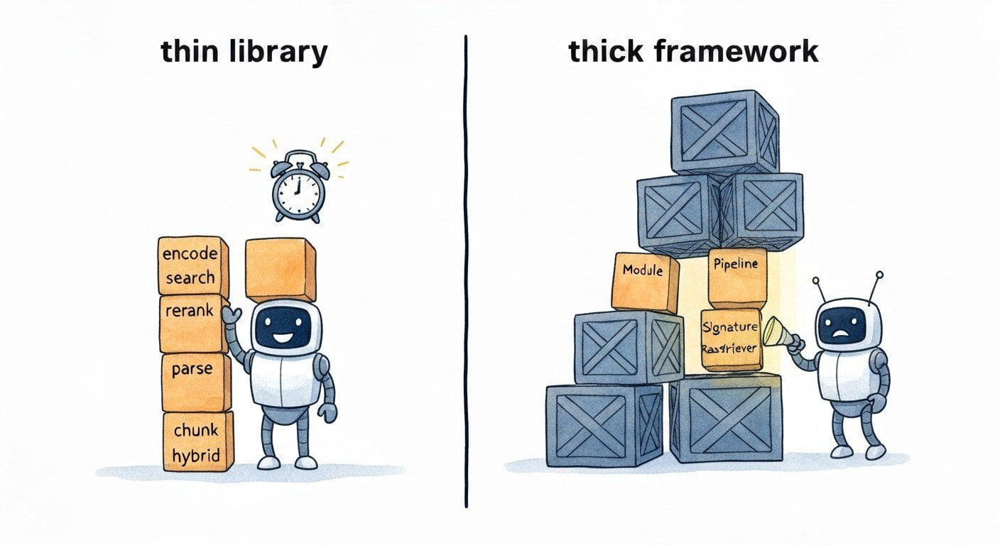

"A thin library is six function calls you understand; a thick framework is six abstractions hiding the same six function calls. Choose the one you can debug at 3 a.m."
Pip, Dependency-Pruning AI Agent
Where the platform (Section 36.1) owns the index, the libraries own the pipeline that fills it and queries it. A production retrieval stack composes five library families: an embedding client (sentence-transformers, fastembed, infinity, FlagEmbedding, or a hosted-API SDK from Cohere, OpenAI, or Voyage); a reranker (cross-encoder or hosted reranker API); a retrieval orchestrator (LangChain, LlamaIndex, Haystack, DSPy) that wires the steps together; a document loader (Unstructured.io, LlamaParse, Docling, MarkItDown, pypdf, pymupdf) that turns PDFs and Office files into chunked text; and a hybrid-retrieval helper (rank-bm25, ranx, or in-engine fusion) that combines lexical and dense scores. The 2026 lesson is that "framework" and "library" are not the same: prefer thin libraries you control over thick frameworks that own your data flow, and use the orchestrators for what they are good at (caching, callbacks, evaluation hooks) rather than as a hidden control flow.
The library choice is less consequential than the platform choice but more consequential than people think. A team that wires sentence-transformers directly into a Postgres-with-pgvector stack writes 200 lines of Python and owns every step. A team that picks LlamaIndex as the orchestrator can build the same system in 30 lines but inherits the framework's abstractions for chunking, retrieval, and post-processing, which can be hard to override when production requirements diverge from the framework's defaults. Both are valid; the wrong default is to assume that a framework is required when the underlying operations are six function calls.
36.2.1 Embedding libraries

Embedding libraries fall into three groups: open-weight runners (you load a model from Hugging Face and call .encode), high-throughput servers (Infinity, TEI, fastembed), and SDKs for hosted APIs. Each has a different operational profile and a different cost story.
- sentence-transformers (Reimers and Gurevych, 2019) is the canonical Python library for running embedding and cross-encoder models locally, with first-class support for Hugging Face hub model IDs. Its objective is to make "load a Sentence-BERT model and encode a list of strings" a two-line script, which matters because the friction of model loading was a real barrier to experimentation in pre-2019 retrieval work. The core technique is a unified
SentenceTransformerwrapper around any pooled-transformer architecture plus a matchingCrossEncoderwrapper for reranking. Pick sentence-transformers as the default for any prototype or research workflow on open-weight embedders; for high-throughput production serving, swap to Infinity or TEI under the same model. The 3.x line (2024+) added trainer-class support for fine-tuning your own embedders. - fastembed (Qdrant, 2023) is a lightweight ONNX-based embedding library that runs on CPU without a PyTorch dependency, distinguished by a tiny install footprint (no torch, no CUDA) and built-in support for the most common open-weight embedders. Its objective is to be the embedding library you can drop into a serverless function or a CI job without a 2 GB PyTorch install, which matters for edge and constrained-runtime deployments. Pick fastembed for CPU inference, AWS Lambda / Cloud Run deployments, or any place where install size dominates; for GPU inference, sentence-transformers or Infinity are faster.
- Infinity (Michael Feil, 2023) is a high-throughput inference server for embedding and reranker models, distinguished by dynamic batching, OpenAI-compatible HTTP API, and support for many open-weight architectures behind one interface. Its objective is to be the "single embedding server for the whole stack" so application code can call a uniform endpoint regardless of model, which matters when you serve multiple models (a small embedder for filtering, a large embedder for ranking, a cross-encoder for reranking) from one fleet. The core technique is async batching plus an OpenAI-compatible JSON contract. Pick Infinity when you serve embeddings at production QPS and want one server to standardize on; for one-off scripts, sentence-transformers is enough.
- Text Embeddings Inference (TEI) (Hugging Face, 2023) is Hugging Face's official high-performance inference server for embedding models, the sibling of TGI for generation. Its objective is to be the production embedding server inside the Hugging Face ecosystem, with first-class support for the HF model hub and the Inference Endpoints product. The core technique is Rust-implemented batching and a serving layer with tracing, metrics, and OpenAI-compatible endpoints. Pick TEI when you are already on the HF ecosystem and want a maintained-by-HF server; Infinity is the third-party alternative with overlapping capabilities.
- FlagEmbedding (BAAI, 2023) is the official library for the BGE family of embedders (BGE-base, BGE-M3, BGE-Reranker), distinguished by model-specific helpers for the multi-functional BGE-M3 (which emits dense, sparse, and ColBERT-style vectors in one pass). Its objective is to be the canonical interface for BGE models including the hybrid sparse-plus-dense use case, which matters because the BGE-M3 hybrid story is one of the strongest open alternatives to closed embedding APIs in 2026. Pick FlagEmbedding when using the BGE family and especially when you want BGE-M3's multi-vector output; for non-BGE models, sentence-transformers is more general.
- Cohere SDK (Cohere, 2022; Embed v3 in 2023, Embed-4 in 2024-25) is the official client for Cohere's hosted embedding and reranker APIs, distinguished by per-call input-type hints (search_query vs search_document vs classification) that route the input through different transformations and by strong multilingual coverage. Its objective is to be the hosted-API embedder for teams that want closed-model performance with one of the more honest evaluation stories, which matters when your corpus is multilingual or when you want Cohere's reranker as a one-call upgrade. Pick the Cohere SDK when you want a hosted embedder with first-class multilingual support and a matching hosted reranker; for self-hosted, FlagEmbedding or sentence-transformers are the alternatives.
- OpenAI embeddings SDK (OpenAI, 2022; text-embedding-3 in 2024) is the official Python and TypeScript client for OpenAI's embedding API, distinguished by the dimensions parameter on text-embedding-3 that lets you trade dimension count for cost and storage (Matryoshka-style). Its objective is to be the easiest hosted embedder to try (one API key, one model name), which matters when "ship a prototype this afternoon" is the constraint. Pick the OpenAI SDK for prototypes, for production stacks already on OpenAI, and when the smaller text-embedding-3-small at 1536 dimensions is good enough; for cost-per-vector at scale or for the highest open-evaluation scores, Cohere, Voyage, or open-weight BGE-M3 / NV-Embed often win.
- Voyage AI SDK (Voyage AI, 2023; voyage-3 series in 2024-25) is the client for Voyage's hosted embedding and reranker APIs, distinguished by domain-specific models (voyage-code, voyage-finance, voyage-law) that are fine-tuned on vertical corpora. Its objective is to be the hosted embedder for verticals where domain specialization matters, which is the recurring 2025-26 finding that domain-tuned embedders beat general-purpose ones by 5-15 points of NDCG on in-domain queries. Pick the Voyage SDK when your corpus is in one of the supported verticals; for general corpora, the differentiation is smaller.
- NV-Embed and NVIDIA NeMo Retriever (NVIDIA, 2024): NVIDIA's open and microservice-packaged embedders, distinguished by NeMo Retriever's NIM (NVIDIA Inference Microservice) packaging that ships the model as a Docker container with optimized inference. Pick the NeMo Retriever path when you are an enterprise NVIDIA customer and the microservice packaging integrates with your existing NVIDIA AI Enterprise stack; for non-enterprise, you can run the underlying NV-Embed weights from Hugging Face directly under sentence-transformers or Infinity.
The default open-weight embedder workflow is six lines:
from sentence_transformers import SentenceTransformer
model = SentenceTransformer("BAAI/bge-large-en-v1.5", device="cuda")
# BGE expects a query prefix; the document side is unprefixed.
query_emb = model.encode("federal reserve interest rate decision",
prompt_name="query", normalize_embeddings=True)
doc_embs = model.encode(documents, batch_size=64, normalize_embeddings=True)The two production-relevant details: (1) the model-specific query prompt (BGE, E5, GTE all have different conventions; getting this wrong silently loses 2-5 NDCG points) and (2) normalize_embeddings=True so cosine similarity equals dot product in your vector database. Most "my retrieval is bad" tickets in 2024-25 traced back to missing one of these two.
36.2.2 Reranking libraries
Rerankers run after the first-stage retriever, on a candidate set of ~50-200 documents, with a more expensive model that scores each query-document pair directly. Two architectural families dominate: cross-encoders (one transformer over [query; document]) and ColBERT-style late-interaction (per-token vectors with MaxSim aggregation). The hosted reranker APIs are usually cross-encoders behind the curtain.
- CrossEncoder via sentence-transformers (Reimers and Gurevych, 2019+) is the canonical open-weight reranker runner, sharing the sentence-transformers Python API. Its objective is to run any cross-encoder reranker from Hugging Face (bge-reranker-large, jina-reranker-v2, ms-marco-MiniLM) with one line of model loading and one line of scoring. Pick CrossEncoder for self-hosted reranking when the BGE Reranker or Jina Reranker is the model; for hosted, Cohere or Jina's APIs are the alternative.
- Cohere Rerank (Cohere, 2023; Rerank 3 in 2024) is Cohere's hosted reranker API, distinguished by very strong out-of-the-box performance and the same multilingual emphasis as Cohere's embedders. Its objective is to be the highest-quality hosted reranker without a fine-tuning step, which matters when the alternative is fine-tuning your own cross-encoder. The core technique is a fine-tuned cross-encoder behind a JSON endpoint. Pick Cohere Rerank when you want a one-API-call quality lift over your first-stage retriever and the budget tolerates per-call pricing; for self-hosted, BGE Reranker is the open alternative.
- Jina Reranker (Jina AI, 2024) is Jina's hosted reranker API with both API access and downloadable open weights. Its objective is to be a hosted alternative to Cohere Rerank with an open-weights escape hatch, which matters when you want to pilot on the API and migrate to self-hosting once the load justifies it. Pick Jina Reranker when the "API now, self-host later" path matters; for either pure-API or pure-self-hosted, Cohere or BGE respectively are the alternatives.
- BGE Reranker (v2 and v2-m3) (BAAI, 2024) is the open-weight reranker family from the same BAAI team behind BGE embedders, distinguished by very strong open-source performance (the v2-m3 reranker is competitive with closed models on MTEB rerank tasks). Its objective is to be the open-weight reranker default in 2026, which matters when self-hosting and not paying per-call dominate. Pick BGE Reranker for self-hosted reranking; the v2-m3 minimal variant is the right starting point.
- ColBERT and PyLate (Stanford, 2020; PyLate 2024): ColBERT is the late-interaction retrieval and reranking architecture, where the model encodes per-token vectors for query and document and computes a MaxSim score across them. PyLate is the modern 2024 implementation built on sentence-transformers, distinguished by ergonomics that match sentence-transformers' API. Pick PyLate for late-interaction retrieval when you want stronger reranking than a single dense vector affords; for single-vector retrieval, sentence-transformers plus a cross-encoder is simpler.
- mxbai-rerank (Mixedbread, 2024): Mixedbread's open-weight reranker family, an alternative to BGE Reranker with sometimes higher MTEB scores. Pick when you have benchmarked it on your own data against BGE.
The bullets above each have a different loading API (sentence-transformers CrossEncoder, the Cohere SDK, Jina's HTTP client, PyLate's ColBERT loader). The rerankers package from Answer.AI (Clavie, 2024) collapses all of them into one Reranker("model-name", model_type=...) constructor, so swapping BGE for Cohere for ColBERT is a one-line change. Prefer rerankers when you expect to A/B-test reranker choices, or when you want a hosted-or-self-hosted toggle without rewriting glue code.
pip install rerankers[transformers]
from rerankers import Reranker
# Pick a model by string; the same call works for any backend.
ranker = Reranker("BAAI/bge-reranker-v2-m3", model_type="cross-encoder")
# ranker = Reranker("cohere", api_key="...", lang="en") # hosted Cohere
# ranker = Reranker("answerdotai/answerai-colbert-small-v1", model_type="colbert")
results = ranker.rank(query="When was BGE-M3 released?", docs=candidate_docs)
top_ids = [r.doc_id for r in results.top_k(5)]36.2.3 Retrieval orchestration frameworks
Orchestration frameworks are not the index and not the embedder; they are the glue that wires them into a pipeline, plus the callbacks, retries, caching, evaluation hooks, and observability that production stacks need. The 2026 landscape has converged on four heavyweight options plus several lightweight competitors.
- LangChain retrievers (LangChain Inc., 2022) is the retriever abstraction layer in LangChain, with adapters for nearly every vector database covered in Section 36.1 plus higher-level retrievers (MultiQuery, ParentDocument, ContextualCompression, SelfQuery). Its objective is to be the cross-vendor retriever interface so application code can swap vector databases by changing one constructor argument, which matters when prototyping against multiple platforms. The core technique is the BaseRetriever interface with get_relevant_documents and a uniform Document type. Pick LangChain retrievers when you are already on LangChain or LangGraph for the rest of the stack; for retrieval-only without the framework, the underlying vendor SDK is leaner. The companion LangGraph handles the agentic-loop control flow when retrieval becomes a tool call.
- LlamaIndex query engines (LlamaIndex Inc., 2022) is the retrieval-focused framework that pre-dates LangChain's retriever push and treats retrieval as the primary use case rather than an add-on. Its objective is to be the RAG-first framework with the deepest catalog of index types (vector, summary, knowledge graph, document graph) and post-processors, which matters when you are doing genuinely RAG-shaped applications rather than agent-shaped ones. The core technique is the IndexNode / VectorStoreIndex / Retriever / QueryEngine layered abstraction plus a rich post-processor catalog. Pick LlamaIndex when retrieval is the core of the application and you want the framework that thinks about retrieval first; for general LLM application orchestration, LangChain is more general.
- Haystack pipelines (deepset, 2020) is the longest-running open-source RAG framework, distinguished by an explicit Pipeline graph model (nodes are typed components, edges are typed data flows) that compiles to a YAML-or-Python-defined topology. Its objective is to be the production-grade framework whose pipeline is a static artifact you can serialize, version, and deploy, which matters when audit and reproducibility dominate. The core technique is the Component / Pipeline abstraction plus a strong type system that catches wiring errors at build time. Pick Haystack when you want a typed pipeline as the central artifact and your team values build-time over runtime; for fast prototyping with hot-reload, LangChain and LlamaIndex are friendlier.
- DSPy retrievers (Stanford NLP, 2023; DSPy 2.x 2024) is the optimizer-first framework that treats prompts and pipelines as programs to be compiled rather than authored, distinguished by a retriever abstraction whose few-shot demonstrations and prompt structure are optimized by the framework rather than hand-written. Its objective is to be the framework where the prompt engineering is done by the framework's optimizer, which matters when manual prompt iteration is the bottleneck. The core technique is the Module / Signature / Optimizer layer; retrievers are first-class Modules. Pick DSPy when prompt engineering is the bottleneck and you want algorithmic optimization of few-shot demonstrations; for hand-tuned pipelines, the value is smaller.
- RAGatouille and Answer.AI's RAGatouille (Answer.AI, 2024): opinionated ColBERT-first retrieval library with a one-line API for late-interaction retrieval. Pick when you specifically want a ColBERT-only orchestrator; for general RAG, the heavier frameworks are stronger.
- GraphRAG (Microsoft, 2024): graph-augmented RAG library that constructs an entity-and-relationship graph during ingestion and queries it alongside vectors. Pick for corpora where entity-level structure matters (research literature, regulatory documents, knowledge bases); for chat-and-documents stacks, the value is marginal.
Every orchestration framework has reasonable defaults that work well for the demo and break when production requires something specific. The recurring pattern: you start on LangChain or LlamaIndex, hit a requirement the framework does not anticipate (custom chunking with metadata propagation, mid-pipeline reranking with a private model, a hybrid query with engine-specific filter syntax), and find that overriding the framework's behavior is harder than reading the underlying vendor SDK and writing the pipeline by hand. The right mental model: use frameworks for their callbacks and observability, drop to the vendor SDK for the actual retrieval call. The thinnest viable stack in 2026 is "vendor vector DB SDK + sentence-transformers + your own 50-line pipeline + LangSmith or LangFuse for tracing"; everything heavier should justify itself against this baseline.
36.2.4 Document loaders and parsers
"Garbage in, garbage out" is the recurring lesson of production RAG. The chunk that goes into your embedder determines the quality of your retrieval; the parser that produces that chunk from a PDF or DOCX or HTML determines the chunk. The 2026 parser landscape sorts into low-level libraries (pypdf, pymupdf) and high-level structure-aware parsers (Unstructured, LlamaParse, Docling, MarkItDown).
- Unstructured.io (Unstructured, 2022) is the breadth-first document parser supporting 60+ file types (PDF, DOCX, PPTX, HTML, MSG, EML, and many more), distinguished by element-typed output (titles, narrative text, tables, list items) that downstream chunkers can use as natural boundaries. Its objective is to be the universal first-stage parser whose output is "elements with types" rather than raw text, which matters because element-aware chunking outperforms raw-text splitting on heterogeneous corpora. Pick Unstructured when you need to ingest mixed formats and want element-typed output; for PDF-only with simple structure, pypdf is lighter.
- LlamaParse (LlamaIndex, 2024) is the LlamaIndex-hosted PDF parser distinguished by LLM-powered table extraction (the parser uses a VLM to read tables that pure-text PDF libraries cannot) and a parsing mode tuned for retrieval (preserves headings, table structure, and chart captions). Its objective is to handle the PDFs that pypdf gives up on (scanned pages, complex tables, multi-column layouts), which matters when your corpus is real-world enterprise documents rather than clean text. Pick LlamaParse when your PDF corpus includes complex tables and scanned content and budget tolerates per-page pricing; for clean text PDFs, pymupdf is free.
- Docling (IBM Research, 2024) is IBM's open-source document parser with layout-aware extraction and table understanding, distinguished by strong open-weights backbone models (DocLayNet for layout, TableFormer for tables) and a clean Python API. Its objective is to be the open-source LlamaParse equivalent, which matters when self-hosting is required. Pick Docling when you need LlamaParse-level table understanding without sending PDFs to a hosted API.
- MarkItDown (Microsoft, 2024) is a lightweight Python library that converts many formats (PDF, DOCX, PPTX, XLSX, HTML, audio, images) to Markdown, distinguished by a focus on producing LLM-ready Markdown rather than structured element trees. Its objective is to be the "one library to convert anything to text I can paste into a prompt", which matters for simple ingestion pipelines. Pick MarkItDown when Markdown output is the right intermediate format and structure preservation is less important; for downstream element-aware chunking, Unstructured or Docling produce richer output.
- pypdf (Mathieu Fenniak et al., 2014) is the canonical pure-Python PDF library, distinguished by a long-stable API and zero binary dependencies. Its objective is to be the lowest-level pure-Python PDF reader and writer, which matters when you want a permissive license, an embeddable dependency, and acceptable text-extraction quality for clean PDFs. Pick pypdf for simple, mostly-text PDFs and when adding system libraries is undesirable; for complex layouts and tables, pymupdf or LlamaParse are stronger.
- PyMuPDF (Artifex / Jorj X. McKie, 2016) is the Python binding for MuPDF, distinguished by very fast extraction and structured access to text blocks, images, and annotations. Its objective is to be the high-performance PDF library when pypdf is too slow, which matters when ingest throughput is the binding constraint. Pick pymupdf for high-volume PDF ingestion; mind the AGPL license unless you have a commercial license.
- open-parse (Filimoa, 2024): open-source PDF parser with semantic-chunking-aware splitting (combines nearby elements when their semantics suggest they belong together). Pick when chunking quality is the bottleneck and you want a parser that does some of the chunking work for you.
marker-pdf (Vik Paruchuri / Datalab, 2024) is an open-weights PDF-to-Markdown converter that combines layout detection, table recognition (Surya), and an OCR fallback into a single pipeline; on the standard PDF benchmarks (PubLayNet, FinTabNet, and Marker's own evaluation) it outperforms Unstructured and is competitive with LlamaParse on tables and math while remaining fully self-hostable. Prefer marker-pdf when your corpus is scientific papers, financial filings, or textbooks where tables and equations dominate retrieval quality.
pip install marker-pdf
# One-shot CLI: produces report.md (and report_meta.json) next to the PDF.
marker_single report.pdf --output_dir ./parsed/ --output_format markdown
# Python API for batch ingestion:
from marker.converters.pdf import PdfConverter
from marker.models import create_model_dict
converter = PdfConverter(artifact_dict=create_model_dict())
rendered = converter("report.pdf")
markdown_text, _, images = rendered.markdown, rendered.metadata, rendered.images36.2.5 Hybrid retrieval helpers
When your platform does not run hybrid search natively (pgvector, Chroma, FAISS), you implement it yourself. The library catalog for the BM25 side and the fusion step:
- rank-bm25 (Dorian Brown, 2019) is the canonical pure-Python BM25 implementation, distinguished by being a 200-line dependency-free library with three BM25 variants (Okapi, BM25L, BM25Plus). Its objective is to be the simplest BM25 you can wire into a hybrid retriever, which matters when your platform lacks built-in BM25. Pick rank-bm25 for prototypes and small corpora (under a few million documents); for production scale, push BM25 into a real search engine.
- bm25s (Xing Han Lu, 2024) is a modern fast BM25 in pure Python and NumPy, distinguished by 100-500x speedup over rank-bm25 via vectorized sparse-matrix BM25 scoring. Its objective is to make BM25 retrieval fast enough to scale to tens of millions of documents in pure Python, which matters when your scale outgrows rank-bm25 but you do not want a search engine. Pick bm25s as the rank-bm25 replacement in 2026; the API is similar enough that migration is mechanical.
- ranx (Elias Bassani, 2022) is a library for ranking metrics and rank fusion, distinguished by a built-in catalog of fusion algorithms (Reciprocal Rank Fusion, Borda, CombSUM, CombMNZ, weighted-sum) and a metrics module for NDCG, MAP, MRR, and so on. Its objective is to be the one library you need for hybrid-retrieval fusion and offline evaluation, which matters when you are tuning fusion weights or comparing retrievers. Pick ranx whenever you need rank fusion outside an engine that does it for you.
- SPLADE (Naver Labs, 2021; v2 2022) is the canonical learned-sparse-retrieval model family, distinguished by sparse vectors over the vocabulary that pair with dense vectors for hybrid search. SPLADE is a model rather than a library, but its inference is supported in sentence-transformers, Pyserini, and most modern engines that handle sparse vectors (Pinecone, Vespa, Qdrant). Pick SPLADE when learned sparse retrieval is part of the hybrid stack; the BGE-M3 sparse output is the alternative.
- Pyserini (Castorini, 2020) is the Python interface to Lucene-based BM25 (Anserini) plus learned-sparse retrievers (SPLADE, uniCOIL), distinguished by being the research-community canonical IR library. Its objective is to be the IR-research workhorse where you can run Anserini-quality BM25 from Python, which matters for reproducible academic benchmarks. Pick Pyserini for research workflows; for production, a real search engine (OpenSearch, Vespa) is more deployable.
When the vector store does not run hybrid for you, the pattern is two queries plus rank fusion:
import bm25s
from ranx import Run, fuse
# 1. Pre-built BM25 index (loaded from disk).
bm25 = bm25s.BM25.load("bm25_index/")
# 2. Dense top-k from your vector database (Chroma in this example).
dense_hits = collection.query(query_texts=[query], n_results=50)
dense_ids = dense_hits["ids"][0]
dense_scores = dense_hits["distances"][0]
# 3. BM25 top-k.
sparse_ids, sparse_scores = bm25.retrieve(
bm25s.tokenize(query), k=50, return_as="tuple")
# 4. Reciprocal Rank Fusion via ranx.
dense_run = Run({"q": dict(zip(dense_ids, -1.0 * dense_scores))}) # cosine dist -> score
sparse_run = Run({"q": dict(zip(sparse_ids, sparse_scores))})
fused = fuse([dense_run, sparse_run], method="rrf", params={"k": 60})
top_ids = list(fused["q"].keys())[:10]The RRF k parameter (60 is the de facto default) controls how much weight late ranks get. For most production cases, RRF-with-default-k is within 1-2 NDCG points of a fully tuned weighted-sum fusion and does not require tuning.
Reciprocal Rank Fusion (RRF) combines $Q$ ranked lists into one by summing reciprocal-rank contributions:
$$\text{RRF}(d) = \sum_{q \in Q} \frac{1}{k + \text{rank}_q(d)}$$
where $\text{rank}_q(d)$ is document $d$'s rank in retriever $q$'s output (rank 1 = top), with $\text{rank}_q(d) = \infty$ if $d$ is not retrieved by $q$ (contribution drops to 0). The constant $k = 60$ (proposed in the original paper) downweights early-rank dominance: at rank 1 the contribution is $\frac{1}{61} \approx 0.0164$, at rank 10 it is $\frac{1}{70} \approx 0.0143$, at rank 100 it is $\frac{1}{160} \approx 0.00625$. Larger $k$ flattens the rank curve further; smaller $k$ rewards top positions more aggressively.
Worked example. Two retrievers, BM25 and a dense embedder, return the following ranks for three documents:
| Document | BM25 rank | Dense rank | RRF score (k=60) |
|---|---|---|---|
| $d_A$ | 1 | 5 | $\frac{1}{61} + \frac{1}{65} \approx 0.0318$ |
| $d_B$ | 3 | 2 | $\frac{1}{63} + \frac{1}{62} \approx 0.0320$ |
| $d_C$ | 10 | 1 | $\frac{1}{70} + \frac{1}{61} \approx 0.0307$ |
$d_B$ wins because it appears near the top in both rankings; the score is robust to a single retriever's outlier ranks. The key property is that RRF is score-scale-free: it does not require calibrated similarities, which is what makes it the de facto default for hybrid BM25 + dense pipelines where the two scores live in different units.
For a small team standing up RAG from zero in a week, the canonical "four-library" recipe ships with no bespoke framework: sentence-transformers (BGE-M3 or NV-Embed encoding), Qdrant OSS (single container, filterable HNSW), RAGAS (reference-free faithfulness / context precision / context recall), and Arize Phoenix (trace-level retrieval observability and embedding-drift dashboards). Total install: pip install sentence-transformers qdrant-client ragas arize-phoenix. Add bm25s and ranx if hybrid retrieval is required; add a 50-line Python pipeline for ingest and query. This stack is the unrolled-loop equivalent of LangChain or LlamaIndex for a retrieval-first application; only adopt a heavier orchestrator once a concrete missing capability (callbacks, agent loops, multi-modal nodes) justifies it.
36.2.6 Evaluation and observability libraries
Retrieval evaluation libraries are the often-skipped fourth leg of the stack; they are what turn "the retrieval feels better" into a number you can track. Coverage:
- RAGAS (Exploding Gradients, 2023) is the canonical RAG evaluation library, distinguished by reference-free metrics (faithfulness, answer relevance, context precision, context recall) that work without a labeled gold set. Its objective is to make "evaluate this RAG pipeline" a four-metric report card, which matters because labeled retrieval data is expensive. Pick RAGAS for first-pass RAG evaluation; for traditional IR metrics on a labeled set, ranx or trec_eval are the alternatives.
- DeepEval (Confident AI, 2023) and Giskard (Giskard, 2022): alternative LLM and RAG evaluation libraries with overlapping metric catalogs and stronger CI integration in some cases. Pick when CI-integrated regression detection is a primary requirement.
- trec_eval (NIST, 1991) is the canonical IR-evaluation binary for TREC-format runs and qrels, distinguished by being the literal standard reference used in every TREC paper. Its objective is to compute every classic IR metric (MAP, NDCG, P@k, R@k, ERR) on a runfile, which matters when you want reproducible numbers comparable to the IR literature. Pick trec_eval for academic comparability and when your eval data is in TREC format; for Python-native evaluation, ranx wraps the same metrics.
- LangSmith (LangChain, 2023) and Langfuse (Langfuse, 2023): observability platforms for LLM and retrieval applications with per-trace logging, dataset management, and evaluation pipelines. Pick LangSmith when you are on LangChain; Langfuse is the framework-agnostic alternative with self-host support.
- Arize Phoenix (Arize, 2023): open-source LLM and embedding observability with retrieval-specific dashboards (embedding drift, retrieval quality, hallucination scores). Pick when self-hosted observability and embedding-drift monitoring matter.
36.2.7 Comparing the orchestration frameworks
| Framework | Sweet spot | Abstraction | 2026 momentum |
|---|---|---|---|
| LangChain + LangGraph | General LLM apps, agent loops | Runnable + StateGraph | High; agent push dominates |
| LlamaIndex | RAG-first applications | Index + QueryEngine | High; retrieval-deep catalog |
| Haystack 2.x | Typed pipelines, production audit | Component + Pipeline | Stable; enterprise focus |
| DSPy | Optimizer-driven prompt programs | Module + Signature + Optimizer | Rising; research-community led |
| RAGatouille | ColBERT-first late interaction | One-line ColBERT API | Niche but growing |
| GraphRAG | Entity-graph augmented RAG | Ingest graph + query plan | Active research area |
36.2.8 The thinnest viable stack
The most defensible 2026 retrieval stack for a small production team:
- Embedder:
sentence-transformersrunning BGE-M3 or NV-Embed (self-host) or the Cohere / Voyage SDK (hosted). - Vector store: pgvector inside an existing Postgres, or Qdrant OSS as a single container, or Pinecone Serverless if managed wins. (Section 36.1 covers the choice.)
- BM25: in-engine if the vector store supports it (Weaviate, Vespa, Elasticsearch, OpenSearch); otherwise bm25s.
- Fusion: ranx Reciprocal Rank Fusion with k=60.
- Reranker: BGE Reranker v2-m3 via CrossEncoder (self-host) or Cohere Rerank 3 (hosted).
- Document parser: pymupdf for clean PDFs; Unstructured.io for the long tail; Docling or LlamaParse for table-heavy enterprise PDFs.
- Orchestration: 100 lines of your own Python, plus LangSmith or Langfuse for tracing. Add LangGraph or LlamaIndex only when you have a concrete reason.
- Eval: RAGAS for reference-free, a hand-curated 200-question gold set with NDCG@10 measured via ranx as the regression gate.
This stack is six libraries plus one optional framework; it fits in a single repository and one person can hold the whole flow in their head. The recurring 2026 lesson is that adding more framework rarely makes retrieval better; tuning the embedder, the chunker, the reranker, and the BM25-vs-dense weight does.
An embedder upgrade changes every vector in your index. The 2024 BGE v1.5 to BGE-M3 transition required full re-encoding for everyone who upgraded; the 2024-25 OpenAI text-embedding-ada-002 to text-embedding-3-large migration likewise. The right defaults: pin the embedder version in your dependency file, write the embedder model ID into the vector metadata so you can detect mixed-version corpora, and have a documented re-encoding playbook before you need it. Every team that has been bitten by this learned the lesson the same way: a quiet pip upgrade ships a "minor" embedder version bump and retrieval quality silently regresses.
36.2.9 Knowledge-graph and structured-retrieval libraries
For corpora where entity-and-relationship structure matters more than free-text similarity, the 2026 libraries that handle the structured side:
- Microsoft GraphRAG (Microsoft, 2024): the canonical graph-augmented RAG library. Builds an entity-and-relationship graph during ingestion using an LLM, then queries it with community-detection summaries plus vector retrieval. Pick when entity-level structure dominates the corpus; for chat-and-documents, the overhead is rarely justified.
- LightRAG (HKU DS Lab, 2024): lightweight graph-RAG alternative with lower ingestion cost than Microsoft GraphRAG. Pick when the GraphRAG approach is attractive but the ingestion cost (an LLM call per chunk) is prohibitive.
- Neo4j GenAI integrations: Neo4j's RAG-focused tooling with vector indexes inside the graph database. Pick when Neo4j is already your knowledge-graph store and you want one system for graph plus vector retrieval.
- Zshot (IBM, 2023): zero-shot entity linking and relation extraction library. Useful for the structured-extraction side of building a knowledge graph from text.
- spacy-llm (Explosion, 2023): spaCy's LLM-backed structured-extraction layer for entities, relations, and structured outputs. Pick when you want a production-quality pipeline with both rule-based and LLM-based components.
36.2.10 Chunking libraries
Chunking sits between the document parser and the embedder, and it is the single highest-leverage place to improve retrieval quality after the embedder choice. The 2026 chunking libraries:
- LangChain text splitters: the canonical catalog of splitters (RecursiveCharacterTextSplitter, MarkdownHeaderTextSplitter, HTMLHeaderTextSplitter, SemanticChunker). The RecursiveCharacterTextSplitter is the de facto default; the SemanticChunker (which uses embeddings to find natural chunk boundaries) is the 2024 upgrade for prose-heavy corpora.
- LlamaIndex node parsers: the LlamaIndex equivalent, with the SemanticSplitterNodeParser and SentenceWindowNodeParser as the highlights.
- Chonkie (2024): a focused chunking library distinguished by token-aware splitters and a clean API. Pick when chunking is the main concern and the framework overhead is unwelcome.
- open-parse semantic chunking: combines layout-aware parsing with semantic chunking in one library. The right pick when both the parsing and the chunking need to respect document structure.
The recurring chunking lesson: fixed-size chunking (split every N tokens) is the wrong default in 2026. Structure-aware chunking (split at headings, paragraph boundaries, or semantic breakpoints) gives 3-8 NDCG points over fixed-size on most corpora. The Anthropic contextual-retrieval recipe (prepend an LLM-generated context line to each chunk before embedding) adds another 5-15 points on top of structure-aware chunking. Both are cheap upgrades relative to changing the embedder.
The 2024-25 LangChain and LlamaIndex releases broke their retriever APIs multiple times. The right defaults: pin minor versions in your dependency file, subscribe to the framework's release notes, and budget a few hours per quarter to absorb breaking changes. The library churn is the single biggest hidden cost of orchestration frameworks; treating it as a known operational tax (rather than a surprise) keeps the project moving.